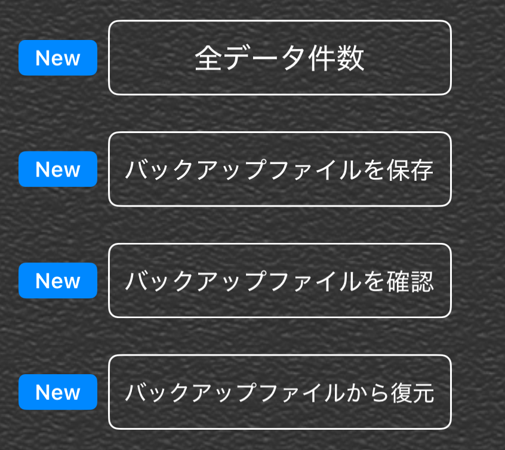

|
ver3.0から、A-Note のデータをバックアップファイルとして保存出来るようになりました。 まず最初に「全データ件数」で、現在のグループ数・メモ数・画像数を確認しておきましょう。 (復元後の確認に役立ちます) バックアップが成功すると、 ANoteBackup_xxxxxxxx_xxxxxx.zip のような日時付きファイル名で保存されます。 保存時は、「このiPhone内」に保存するのか、「iCloud Drive」に保存するのかを意識して選択しましょう。 iCloud Driveへ保存すると、同じAppleIDを使用している別端末へデータを移動しやすくなります。 また、「このiPhone内」へ保存した場合でも、ファイルアプリなどを利用して AirDrop やメール等で別端末へ送る事が可能です。 【おすすめのバックアップ手順】 1. 「全データ件数」で現在の件数を確認 2. 「バックアップを保存」を押す 3. データ圧縮完了後、保存先選択画面で保存場所を選ぶ 4. 必要に応じて別端末やクラウドへ複製して保管 【バックアップから復元する手順】 1. 「バックアップファイルを確認」を押す 2. バックアップ内のグループ数・メモ数・画像数を確認 3. 問題なければ「バックアップから復元」を実行 ※注意：「バックアップから復元」を実行すると、現在のデータは読み込んだ内容で上書きされます。 「バックアップを保存」でファイルを作成しただけでは、端末故障時などに失われる可能性があります。 iCloud Drive や別のデバイスへ共有・保存しておくことをおすすめします。 「このiPhone内」に保存した場合でも、保存場所や端末状況によってはファイルが失われる可能性があります。 大切なデータは iCloud Drive や別端末にも複製して保管しておくことをおすすめします。 また、バックアップファイルの管理は自己責任でお願いいたします。 ver3.0以降で利用できます。 |